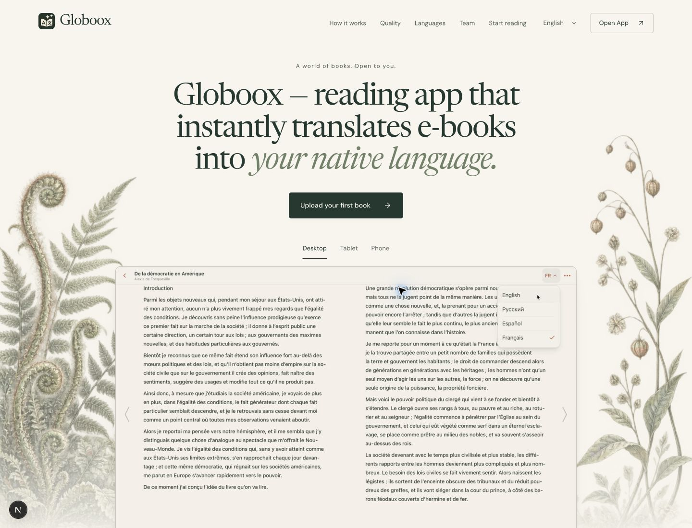

Hero composition exploration
Three independent ImageGen studies using the current landing capture and actual product screenshot. Same original words and product. No selection or implementation yet. Generated app pixels are composition references only; the original recording remains authoritative.
Current browser capture

Diagnosis, prompts, critique and provenance